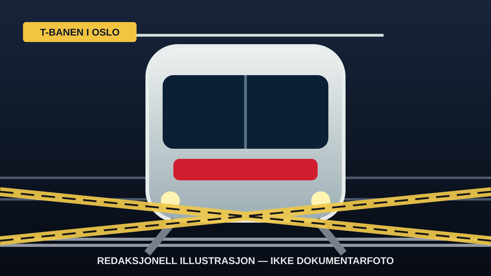

NYHETER · SAMFERDSEL
Nesten hele T-banen i Oslo stengt i fire dager
63 av Oslos 101 T-banestasjoner holder stengt fram til og med søndag 22. november. Ruter ber folk planlegge reisen, mens Statens vegvesen advarer mot økt kø.

Fra torsdag 19. til og med søndag 22. november er 63 av Oslos 101 T-banestasjoner stengt. Alle stasjonene i sentrum er berørt. Årsaken er testing av et nytt signal- og sikringssystem. Det betyr at mange som vanligvis reiser raskt gjennom byen, må finne alternative ruter.
Kilder: Statens vegvesen, 16. november; Ruters reiseråd, oppdatert 13. november.
Linje 4 og 5 er helt stengt i perioden. Linje 1, 2 og 3 kjører bare på kortere strekninger vest i byen, ifølge Ruter. Det er satt inn buss for bane i vest. I øst skal flere avganger på ordinære busslinjer ta unna en del av trafikken, men det kjøres ikke egne erstatningsbusser for alle stengte T-banestrekninger.
Kilder: Ruter – slik reiser du under stengingen; Ruters pressemelding, 16. november.
Ruter understreker at ekstra busser og trikker ikke kan erstatte kapasiteten til T-banen. Reisende bes om å planlegge turen på forhånd, beregne mer tid og om mulig reise utenom de travleste periodene. Oppdatert informasjon om alternativene ligger i reiseplanleggeren og Ruter-appen.
Dette bør du vite før du reiser
- Varighet: torsdag 19. til og med søndag 22. november 2026.
- Omfang: 63 av 101 stasjoner er stengt, også alle i sentrum.
- Linjer: 4 og 5 innstilt; 1, 2 og 3 bare korte strekninger i vest.
- Rutevalg: Sjekk en konkret reise i Ruters reiseplanlegger.
Også veitrafikken kan bli hardt rammet. Statens vegvesen advarer om kø og ber bilister vurdere om de faktisk må kjøre. Vegvesenet mener torsdag og fredag er særlig krevende fordi mange skal til og fra jobb. Økt biltrafikk kan dessuten gjøre det vanskeligere for bussene å komme fram.
Stengingen er del av et større arbeid med signalanlegget. Ruter beskriver at det nye systemet skal gjøre det mulig å kjøre flere T-baneavganger med kortere avstand mellom togene. Arbeidet fører også til nye perioder med stengninger i 2027.
Kilde: Ruter – Det store T-baneløftet.
Kilder og dokumentasjon
- Statens vegvesen, 16. november 2026 – T-banen stenger 19.–22. november
- Ruter, 13. november 2026 – Reiseråd når T-banen stenger
- Ruter, 16. november 2026 – Denne uken stenger nesten hele T-banen
- Ruter – Det store T-baneløftet
Reiseråd og trafikkbildet kan endre seg underveis; sjekk Ruters oppdaterte informasjon på reisedagen. Bildet er en foreløpig redaksjonell illustrasjon, ikke et foto fra stengingen.